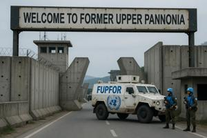
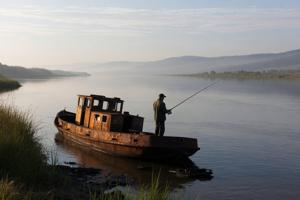
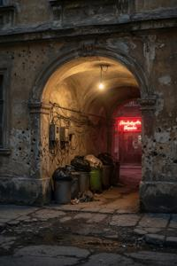
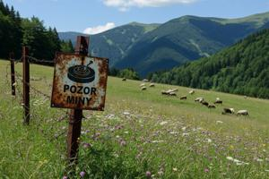
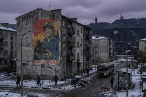
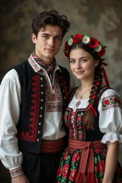
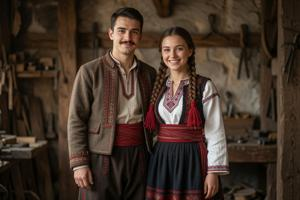

Бывшая Верхняя Паннония
{kind=link}

Бывшая Верхняя Паннония (згур. и дегл.: Byla Gorna Pannonia; глаг.: ⰁⰬⰎⰀ ⰃⰑⰓⰐⰀ ⰒⰀⰐⰐⰑⰐⰊⰀ) — территория в Центральной Европе. Не имеет выхода к морю, граничит с Австрией, Венгрией, Румынией, Сербией, Хорватией и Словенией. Площадь — около 28 400 км²; достоверной переписи не проводилось с 1985 года. По независимым оценкам 2026 года, постоянное население составляет около 1 630 000 человек.
Территория не имеет международно признанного правительства. По условиям Лозаннских соглашений 1995 года, её статус определён как переходный под контролем ООН в ожидании политического урегулирования между двумя основными этническими общинами. Фактически территория разделена между двумя непризнанными государствами — Згурской Республикой на северо-западе и Деглянской Республикой на юго-востоке. Непосредственно управляемая ООН Нейтральная зона включает часть столицы Вроновицы. Единственный международно признанный институт — администрация Верховного комиссара ООН по Бывшей Верхней Паннонии. Переговоры между двумя непризнанными государствами зашли в тупик в 1995 году и с тех пор не сдвинулись с места.
Название Бывшая Верхняя Паннония (БВП) принято в документах ООН после Лозаннских соглашений, признавших, что Республика Верхняя Паннония прекратила существование как субъект международного права.
География
Территория БВП занимает переходную зону между Паннонской равниной и северными хребтами Динарских гор. Рельеф понижается от карстового нагорья на юге к долине Южной Дравы в центре и поднимается холмами к северу и северо-западу.
Южная Драва
{kind=link}

Южная Драва (Juzsna Drava) — главная река территории. Она берёт начало в западной части хребта Нехожи Врехи в лесах Доброгощи Дубри, течёт на восток-северо-восток через центральную долину и уходит в Венгрию, где впадает в главную Драву. Река судоходна, но коммерческая навигация на ней не развита: в эпоху Габсбургов инвестировали больше в железные дороги, чем в речные пути.
В 1950-х годах коммунистические власти построили ГЭС имени Гоубки примерно в 40 км ниже Вроновицы — главный источник электроэнергии на территории БВП. Плотина образовала огромное водохранилище: сначала его назвали морем Сталина, а после десталинизации переименовали в Паннонское море (Pannonsko Morje); в разговорной речи чаще встречается прозвище Вонючее море (Smrudno Morje). Под воду ушли десятки прибрежных поселений, в том числе бывшая епископская резиденция в Брегово. Промышленные стоки с заводов Гоубкаславы за несколько десятилетий превратили Паннонское море в один из самых загрязнённых крупных водоёмов мира, а его берега в Хлюбища — сплошное отравленное болото.
После 1992 года, когда прекратились трансграничные железнодорожные рейсы, река снова обрела практическое значение: теперь она в основном служит маршрутом для контрабанды между зонами — лодки обходят контрольно-пропускные пункты Нейтральной зоны.
Населённые пункты на Южной Драве
{kind=link}

Вроновица (ок. 670 000 жит.) — бывшая столица; на её долю приходится около сорока процентов постоянного населения территории. Османская крепость XVI века при Габсбургах выросла в крупный город и по сей день остаётся административным, культурным и торговым центром БВП. Южная Драва рассекает Вроновицу пополам, по ней проходит граница между згурской и деглянской зонами.
Гоубкаслава (ок. 120 000 жит.) расположена на правом берегу примерно в 40 км к востоку от Вроновицы, в деглянской зоне; здесь при коммунистах развернулось крупное промышленное строительство. Ведущую роль играли заводы тяжёлой металлургии и военной промышленности; железную руду везли из Кролевых Железен, а электроэнергию давала ГЭС имени Гоубки. Со временем прибавились заводы тяжёлого машиностроения, стройматериалов, химические производства и Гоубкаславский автомобильный завод, на котором выпускали микроавтомобиль «Драва». После прекращения государственных субсидий в 1990 большая часть заводов остановилась.
Брегово — древнейшая епископская резиденция Верхней Паннонии, расположенная на левом берегу напротив Гоубкаславы. В 1529 году османские войска разграбили и сожгли город. После строительства плотины город ушёл под воду целиком; над поверхностью возвышаются только руины епископского замка, окружённые водой и почти недоступные. С 1998 года Згурская Республика предлагает этот объект за 1 евро при условии реставрации. Покупателей нет.
Административные центры уездов Виштица и Комаровица расположены выше по течению от Вроновицы; Рудец — ниже Гоубкаславы, у румынской границы.
Нехожи Врехи
{kind=link}

Нехожи Врехи («Непроходимые горы») — самая северная цепь Динарских Альп, естественная южная граница с Хорватией и Сербией. Высшая точка хребта — Ведьмина Гора (Vjedjmina Gora, 1847 м). Перевалы на небольших высотах проходимы круглый год; выше 1000 метров, как правило, с ноября по март перекрыты снегом. Единственный железнодорожный проезд, Зоржинский туннель, не функционирует с 1992 года. Здесь на гряде столбообразных скал на северных склонах гор над долиной Южной Дравы расположен Клыков монастырь, хранивший паннонскую глаголическую традицию в течение всех средних веков.
Горы густо заросли лесом и редко населены. Регион контролируется в основном Деглянской Республикой, за исключением карстовой области Доброгощи Дубри на западе, необитаемой и не контролируемой никем. Имеются залежи железной руды у подножий гор близ Кролевых Железен. Другие важные поселения:
Дрожин — административный центр уезда на пути из Вроновицы к перевалам Нехожих Врехов. Здесь стоит замок печально известной «вдовы-оборотня» XVI века баронессы Орсои Дрожинь.
Медно — огромный исправительно-трудовой комплекс, частично расположенный под землёй, в медных шахтах бронзового века.
Северные холмы
{kind=link}

К северу и северо-западу от центральной долины рельеф поднимается холмами высотой 400–700 метров; здесь берут начало несколько второстепенных притоков Дравы и Южной Дравы. Территория сложена осадочными породами; угольные и нефтяные месторождения здесь активно разрабатывались в XX веке и сейчас в основном исчерпаны.
Этот район густо населён. Здесь находятся Новокопы и Шаменик — центры добычи угля; Челеница и Балнош — центры добычи нефти и газа; город-призрак Старокопы, заброшенный после исчерпания угольных шахт в XIX веке; и бальнеологический курорт Гниловоды близ австрийской и венгерской границ. Вся эта территория принадлежит Згурской Республике.
История
Ниже изложен по возможности нейтральный взгляд на историю страны, неприемлемый ни для деглян, ни для згурцев. Згурские и деглянские точки зрения изложены в отдельных статьях.
Ранний и средневековый период
С V века до н.э. греческие и римские источники упоминают иллирийские и кельтские племена на этой территории. В I веке н.э. римляне включили регион в провинцию Паннония; при последующем её разделе возникло название Pannonia Superior — Верхняя Паннония, — под которым территория известна по сей день. Римские поселения тяготели к долине Южной Дравы; дороги, городские руины и латинские топонимы пережили крушение империи. С IV века сюда накатывали волны переселенцев — готы, гунны, авары, — и от прежнего римского порядка не осталось следа. Этнический и политический облик региона менялся не раз, пока в VI веке сюда не пришли с севера славяне, заложившие основу современного культурного и языкового уклада.
В IX веке территория вошла в состав Великой Моравии. Свв. Кирилл и Мефодий принесли в страну христианство, разработали глаголицу и перевели Священное Писание на старославянский язык. В начале X века Великая Моравия рухнула под ударами венгров; часть моравской славянской знати и духовенства ушла на юг, в речные долины Паннонии, — это переселение определило всю дальнейшую историю края. Следующие шесть веков на этой земле существовали мелкие княжества, суверенитет над которыми оспаривали Венгрия и различные балканские державы.
Глаголическую традицию переселенцы принесли с собой на юг; главным её хранителем стал Клыков монастырь. В 1040 году св. Тибор основал епископскую кафедру в Брегово и ввёл латинский обряд. Во всех церквях епархии глаголическое богослужение оказалось под запретом. Клыков устоял, сославшись на папскую привилегию IX века — документ, который, как выяснилось впоследствии, был подделкой XI века. В 1115 году венгерская корона пожаловала бреговским епископам титул князя-епископа, добавив к церковной власти светскую; местные сеньоры, не желавшие подчиняться этой двойной власти, тяготели к Клыкову — и под их защитой славянский обряд устоял. Противостояние длилось почти девять столетий. См. Католическая церковь в Верхней Паннонии.
Османская эпоха (1529–1691)
В 1529 году османы разграбили и сожгли Брегово. Средневековая епархия перестала существовать. Командующий Хаким Абаз-бей Кузгун — турецкий военачальник кавказского происхождения, чей образ густо оброс легендами (подданные приписывали ему способность оборачиваться вороном), — выбрал стратегически выгодное место на левом берегу Южной Дравы и заложил здесь крепость. Строительство Кузгун-Калеси, будущей Вроновицы, началось в 1534 году.
Около 160 лет Верхняя Паннония входила в состав Кузгунского санджака. Религиозная политика осман была прагматичной: оба католических обряда были терпимы, глаголическое книжное дело не прерывалось. Самым долговечным из османского наследия оказался каменный мост через Южную Драву — Турецкий мост, — переживший все последующие режимы и стоящий по сей день.
Эпоха Габсбургов (1691–1918)
В 1691 году, в ходе Великой турецкой войны, австрийские войска отвоевали Верхнюю Паннонию и включили её в состав Габсбургской империи. Северные и западные части стали графством Верхняя Паннония; южные и восточные вошли в состав Военной границы как генералат Верхняя Паннония, подчиняясь напрямую военным властям.
В 1692–1701 годах Кузгун-Калеси перестроили по системе Вобана, придав крепости форму бастионной звезды, и прорыли канал, превративший её в искусственный остров. Под новым именем Рабенбург она стала административным центром обеих частей территории. В 1755 году был освящен собор Святого Тибора, и епископская кафедра, до того номинально приписанная к Брегово, переехала в Рабенбург.
В ту же эпоху произошёл этнографический казус, повлиявший на всю паннонскую историю. Два итальянских наёмника на службе у князя Евгения Савойского — Кандидо Сгуро и Массимо Дельяно — набрали по роте из местных славян. Осев на верхнепаннонской Военной границе на правах граничар, эти роты продолжали носить фамилии своих первых командиров. За следующий век из этих прозвищ выросли этнические имена: к началу XIX века славянизированные формы «згурцы» и «дегляне» утвердились как названия двух верхнепаннонских народностей. Подробнее см. Згуро-деглянские культурные различия.
Революция 1848–1849 годов выявила политические разногласия: активисты, считавшие себя згурцами, в целом поддержали венгерских националистов; другие, идентифицировавшие себя как дегляне, и большинство местной знати встали на сторону Габсбургов. Ставка на Вену себя оправдала. В 1850 году Габсбурги объединили графство и генералат в Банат Верхняя Паннония с ограниченной автономией; после Австро-венгерского компромисса 1867 года он остался в составе Королевства Венгрии.
В позднегабсбургский период в долине Южной Дравы развивалась промышленность, сложилась железнодорожная сеть, а Рабенбург, или, как называли его славяне, Вроновица приобрёл облик и инфраструктуру процветающего провинциального центра. Тогда же развернулось паннонское Славянское возрождение — впервые у славянского населения края появилось общее историческое самосознание и самобытная национальная культура.
Первая республика и монархия (1918–1940)
Паннонский Национальный комитет во Вроновице провозгласил независимость через несколько дней после поражения Австро-Венгрии в 1918 году. Паннонские легионеры — добровольцы из паннонских военнопленных, воевавшие на стороне России, — в феврале 1919 года пришли пешим маршем из Триеста и подавили коммунистическое восстание, инспирированное Венгерской Советской Республикой. На плебисците 1920 года около шестидесяти процентов паннонцев проголосовали за независимость; згурцы голосовали преимущественно «за», а дегляне — в основном за объединение с Югославией. Демократическая республика пережила вскрытый плебисцитом раскол, но ненадолго.
В 1931 году генерал Дроган Гловач захватил власть во главе Движения национального усиления. В 1934 году он взошёл на престол как король Дроган I; его супруга, актриса Этелька Баумгартен, короновалась под именем королевы Адели и была объявлена наследницей. Монархия рухнула в сентябре 1940 года: венгерская армия, действуя заодно с внутренней провенгерской фракцией офицеров, вторглась в Верхнюю Паннонию и аннексировала её. Король Дроган был убит в первый же день. Королева Адель бежала в Лондон, где создала правительство в изгнании; в 1941 году там же родилась её дочь Людмила.
Оккупация и коммунистическая эпоха (1940–1990)
Венгерские оккупационные власти восстановили венгерский язык как официальный и ввели расовое законодательство, действовавшее в Венгрии с 1938 года. В марте 1944 года Германия взяла власть в свои руки — и притеснения сменились истреблением: весной и летом того же года евреев и цыган арестовали и депортировали; большинство погибло.
Осенью 1944 года, после тяжёлых боёв, советские войска освободили Верхнюю Паннонию. Просоветское временное правительство во главе с Северыном Гоубкой приехало в Вроновицу в декабре 1944 года. В 1945 году была провозглашена Народная Республика Верхняя Паннония. За следующие четыре года Гоубка выстроил тотальное однопартийное государство: устранил политических соперников, национализировал экономику и разместил в островной крепости тайную полицию НООН.
Сначала Гоубка ориентировался на Москву, с 1956 года на Югославию, а в 1966-м порвал и с ней. От обоих блоков он в итоге отказался — и, не доверяя ни одному соседу, выстраивал союзы с Албанией, Румынией, Ливией Каддафи и Китайской Народной Республикой. В 1968 году Гоубка осудил советское вторжение в Чехословакию и приостановил членство в Варшавском договоре, после чего развернул масштабную милитаризацию паннонского общества на случай одновременного столкновения с СССР, Югославией и НАТО. Военная служба стала обязательной для обоих полов; призывников готовили к партизанской борьбе и сопротивлению оккупации.
Внутри страны правительство превратило Гоубкаславу в промышленный центр и выстроило в южной Вроновице по единому плану район Соцкостур (Социалистический город). Поначалу рост обеспечивали скромные нефтяные месторождения, освоенные в 1950-х; к 1970-м они в значительной мере иссякли. Рос внешний долг; экономика без частного сектора всё больше буксовала; расходы на армию и НООН пожирали бюджет — страна вошла в затяжной спад. К концу 1980-х реальные зарплаты резко упали, нехватка продовольствия впервые за сорок лет вызвала открытые протесты. Осенью 1989 Гоубка умер от сердечного приступа.
Гражданская война и раздел (1990–1995)
На смену коммунистическому режиму в 1990 году пришла Третья республика. Впервые со времён диктатуры Гловача прошли конкурентные выборы, и обе народности выбрали этнических националистов. Парламент такого состава управлять не мог: любой вопрос реформ немедленно превращался в предмет межэтнического торга, и каждую меру, выгодную одной стороне, другая тут же клеймила как попытку подчинить государство своей народности. Плановую экономику ломали стремительно и без разбора — и этот процесс всеми считался коррумпированным. К 1991 году официальная безработица в Вроновице перевалила за сорок процентов.
Деглянские общественные организации заявляли, будто бы в этот переходный период згурцы сосредоточили активы и власть в своих руках. Они потребовали сначала автономии, потом особого конституционного статуса. Згурские националисты расценили эти требования как прелюдию к разделу. В условиях экономического коллапса и слабости государства взлетела преступность. В Вроновице рабочие с закрывшихся предприятий собирались в дружины самообороны по этническому признаку.
По военной доктрине Гоубки Народно-освободительная армия строилась как сеть территориальных ополчений — рассредоточённая и трудноуязвимая для оккупанта. Когда политический порядок рухнул, эти части закономерно перегруппировались вокруг своих местных общин. По всей территории были разбросаны подземные склады стрелкового оружия, боеприпасов, взрывчатых веществ, лёгкой артиллерии — на случай затяжного народного сопротивления. Взять склады под контроль государства после краха режима не удалось; рассредоточенными они оставались и к началу гражданской войны — и обеспечили её оружием.
Полномасштабная война вспыхнула весной 1992 года. В 1994 году королева в изгнании Людмила добилась перемирия. Обе враждующие стороны согласились на восстановление монархии с королевой в роли верховного арбитра. Во время церемонии коронации во Вроновице Людмила была убита. Перемирие рухнуло в тот же день.
В 1995 году на территорию вошли миротворцы ООН. По Лозаннским соглашениям стороны остановили боевые действия, закрепили линии прекращения огня в качестве административных границ, установили Нейтральную зону и должность Верховного комиссара ООН. Лозанна предусматривала предварительные условия постоянного урегулирования: згурские и деглянские власти должны были договориться о совместном правительстве и создать механизмы привлечения к ответственности за военные преступления. Ни одно из условий выполнено не было.
Власть и политика
{kind=link}
Конституционный статус Бывшей Верхней Паннонии официально именуется временным. В действительности он постоянный.
Канцелярия Верховного комиссара ООН размещается в Банском дворце на Гродском Плаце во Вроновице. С 1995 года сменились семь Верховных комиссаров; каждый неизменно докладывал, что переговоры находятся «на важном этапе». Переговоры не прекращаются; в ходе их урегулировали ряд сугубо технических вопросов — расписание вывоза мусора, выставление счетов за коммунальные услуги на межзональных территориях, таможенные процедуры на пограничных пунктах — так и не придя ни к какому соглашению по основному конституционному вопросу.
Згурская Республика (Zgurska Republyka) управляет северо-западной частью территории — около 55 процентов площади страны. Её конституционная система предусматривает избираемого президента и однопалатный парламент; выборы проводятся и по паннонским меркам являются конкурентными.
Деглянская Республика (Deglänska Republyka) управляет юго-восточной частью — около 45 процентов площади. С 1999 года ею правит Секретный контрольный комитет — анонимная военная хунта, состав которой публично не раскрывается, в условиях постоянного военного положения.
Ни одна из республик не имеет международного признания, ни одна не признаёт юрисдикцию другой. Обе конституции называют столицей Вроновицу и содержат взаимно несовместимые территориальные претензии. Ни одна не предлагает решения конфликта.
Миротворческий контингент ООН FUPFOR (Former Upper Pannonia Force) развёрнут с 1995 года. Его полицейский дивизион поддерживает порядок в Нейтральной зоне, охраняет контрольно-пропускные пункты и управляет Международным аэропортом имени Короля Светоплока к северу от Вроновицы. У FUPFOR нет мандата на действия внутри фактических государств.
Демография
{kind=link}

Перепись 1985 года зафиксировала 2 040 184 жителя; с тех пор переписей на всей территории не проводилось. По независимым оценкам 2026 года, постоянное население составляет около 1 630 000 человек — примерно на двадцать процентов меньше, чем в 1985: сказались потери в ходе войны, эмиграция и падение рождаемости.
{kind=link}

Приблизительный этнический состав в 1985 году: згурцы — 48 процентов, дегляне — 36 процентов, цыгане — 9 процентов, прочие (венгры, немцы, словенцы, славяне-мусульмане, евреи) — 7 процентов. Современные данные оспариваются и не считаются надёжными: оба фактических правительства систематически завышают собственное население и занижают чужое. По оценкам ООН, згурцев сейчас около 810 000, деглян — около 700 000, цыган — около 100 000.
У обеих основных народностей общий язык, общая католическая религия, общая материальная культура и неотличимый внешний облик. Религиозная принадлежность скорее декларируется, чем соблюдается, и служит прежде всего культурным маркером; общая католическая идентичность не стала основой для примирения.
С 1990 года люди неуклонно покидают территорию. Диаспора — большей частью в Германии, Австрии и Словении — насчитывает 400 000–550 000 человек; денежные переводы составляют значительную долю доходов домохозяйств в обеих зонах. Поколение, рождённое в 1992–1995 годах, составляет особенно малую долю в нынешнем постоянном населении: военное время резко снизило рождаемость, и непропорционально большая часть с тех пор эмигрировала.
Экономика
Экономика Бывшей Верхней Паннонии работает плохо и не растёт.
В основе всех экономических проблем — отсутствие международно признанной государственности. Без признанных правительств ни одно из фактических государств не может заключать обязывающие торговые соглашения, получать займы на международных рынках, привлекать иностранных инвесторов нормальным образом или вписываться в регуляторные рамки ЕС. Иностранный инвестор, пришедший в любую из зон, оказывается в правовом вакууме.
Денежные переводы из диаспоры — самый надёжный источник доходов домохозяйств. Натуральное и мелкотоварное сельское хозяйство кормит деревенское население. Теневая экономика — уходящая корнями в коммунистические времена, и только разросшаяся после войны — включает контрабанду, обмен валюты и межзональную торговлю запрещёнными товарами. Гуманитарная помощь и стабилизационные фонды ЕС — через администрацию ООН — поддерживают государственные услуги и доходы домохозяйств. Удалённая занятость стабильно растёт с середины 2000-х, особенно среди образованного населения Нейтральной зоны и Згурской Республики; криптовалюты служат основным платёжным инструментом.
Нейтральная зона — единственное место, где территория соприкасается с легальной международной экономикой. Здесь располагаются иностранные НКО, агентства ООН и международные организации; торговый квартал вдоль проспекта Эньо Жлутоводого обслуживает и международный персонал, и граждан паннонских государств.
Для въезда нужна виза — администрация ООН выдаёт её по дипломатическим или гуманитарным основаниям; туристические визы не выдаются. Необходимо приглашение от зарегистрированной гуманитарной организации; такие письма продаются по хорошо известным неформальным каналам. Срок ожидания — несколько месяцев независимо от заявленных оснований. Наземные переходы в любую из зон открыты только для местных жителей. Неофициальный въезд через сухопутную границу возможен; последствия непредсказуемы. Подробнее о посещении территории см. соответствующие статьи.
Категории: Общий справочник